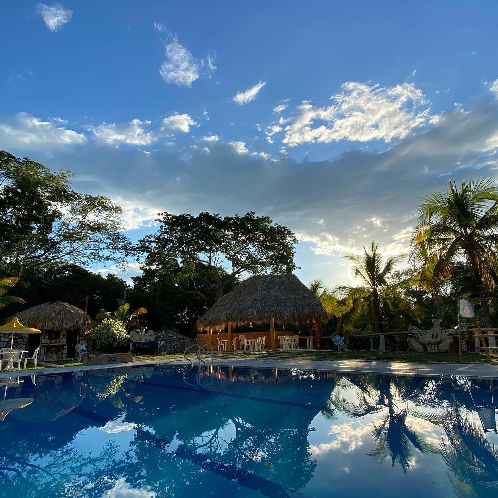
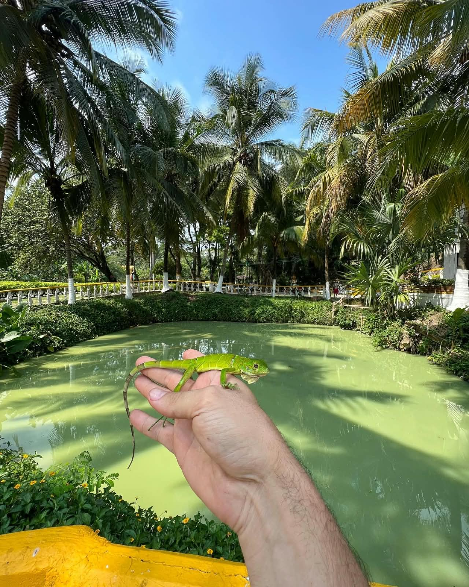
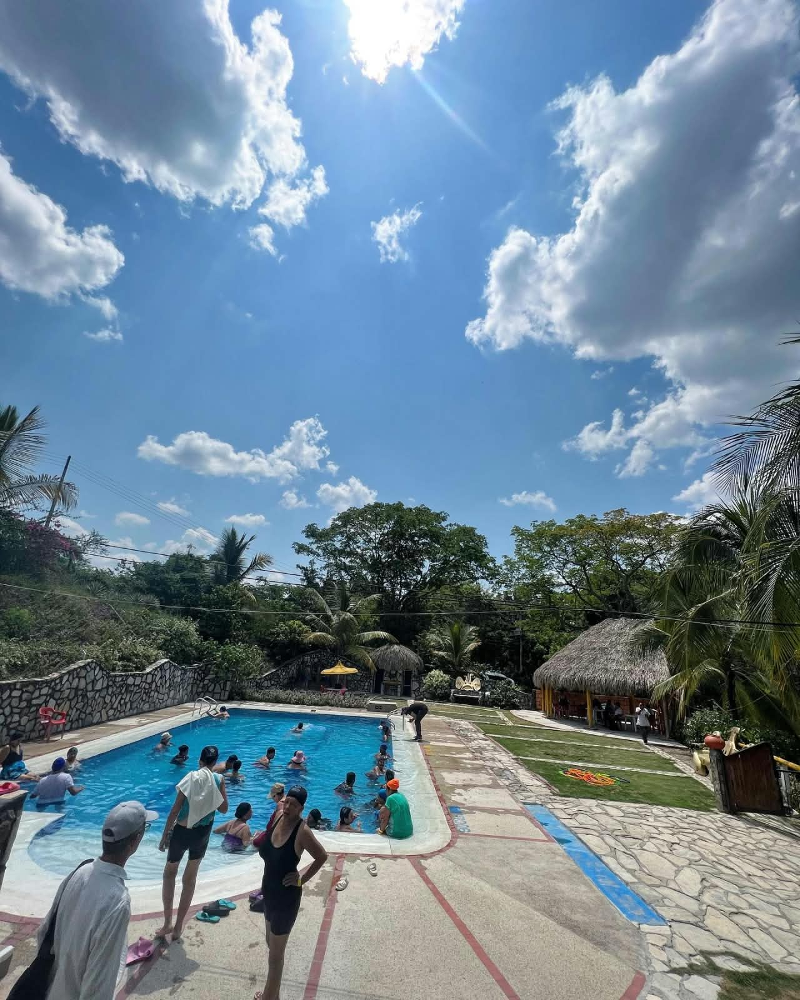
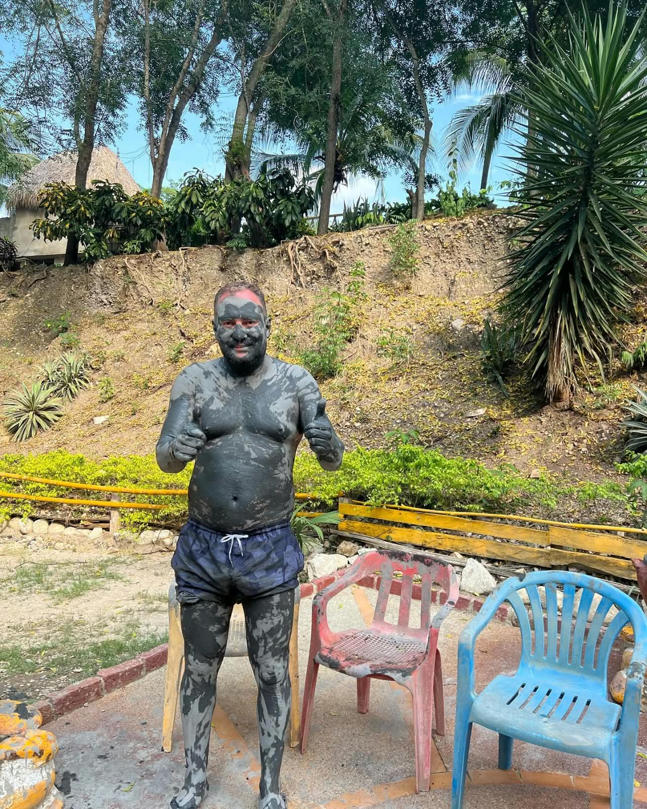
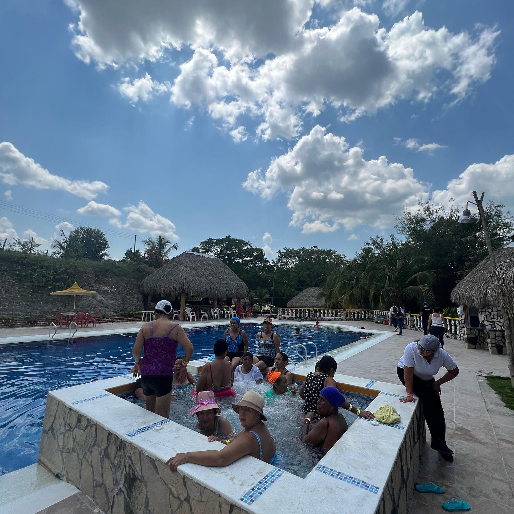

Aguas termales curativas, lodoterapia mineral ancestral y descanso campestre rodeado de naturaleza viva.
Un legado de sanación y ecoturismo que ha perdurado por generaciones en el corazón de Cundinamarca.
El Gran Pozo Azufrado se explota turísticamente desde 1942 gracias a la visión de Don Lázaro María Pulido, quien comprobó personalmente los extraordinarios beneficios medicinales de estas aguas minerales azufradas.
Al experimentar una sanación notable en su salud física, Don Lázaro decidió homologar el manantial y crear un espacio para que miles de familias colombianas pudieran acceder a sus virtudes curativas.
Construyó la primera alberca de almacenamiento de aguas azufradas en Tocaima, la cual dio inicio al actual complejo turístico y de salud.
Con temperaturas naturales entre 18°C y 27°C, sus aguas son ricas en azufre bioasimilable, bicarbonatos, sulfatos y yodo de origen profundo.
Los sedimentos finos extraídos del lecho son utilizados como mascarillas para revitalizar la dermis, aliviar dolores articulares y activar la microcirculación.
Don Lázaro María Pulido experimenta las propiedades medicinales del agua y decide acondicionar el sitio.
Ingeominas y los Ministerios de Minas y Salud reconocen oficialmente la Fuente Natural Acuatá Pulido.
Integración de gastronomía tradicional al horno de leña, piscinas, jacuzzi campestre y senderos ecológicos.


Situados en un microclima privilegiado en Tocaima, ofrecemos un refugio de descanso genuino para desconectar del estrés urbano y renovar la vitalidad.
Fomentar el turismo de bienestar y salud en Tocaima con una atención cálida, permitiendo una experiencia inigualable de relajación en contacto directo con la naturaleza.
Consolidarnos como el destino ecoterapéutico y cultural más querido y representativo de Cundinamarca, reconocido por la pureza de sus aguas y su hospitalidad.
Diseñados para brindar descanso profundo, regeneración de la piel y bienestar integral.

HidroterapiaAlbercas ricas en minerales volcánicos y azufre disuelto natural. Ideales para relajar articulaciones, aliviar fatiga muscular y armonizar el organismo.

Dermo-regeneraciónAplicación de barros cargados de oligoelementos extraídos de la fuente natural. Exfolia profundamente, elimina impurezas y deja la piel suave y nutrida.

RelajaciónHidromasaje con burbujas y áreas sombreadas bajo quioscos de palma. Un oasis donde disfrutar de la frescura del agua en un entorno de paz absoluta.
Pasa un día inolvidable o una jornada de tranquilidad en nuestras instalaciones campestres.
Km 3,5 vía Tocaima - Jerusalén
Disfruta de una jornada completa de descanso, salud y relajación en un entorno 100% natural, con acceso ilimitado a todas nuestras amenidades medicinales.
La tarifa incluye acceso ilimitado durante todo el día a las albercas de aguas azufradas terapéuticas, aplicación de lodo mineral ancestral, uso de quioscos tradicionales con hamacas, zonas verdes de descanso, parqueadero vigilado gratuito e instalaciones 100% pet-friendly.
Atendemos todos los días (lunes a domingo, incluidos días festivos) de 8:30 a.m. a 5:00 p.m. Recomendamos llegar en horas de la mañana para aprovechar al máximo las albercas y encargar tu almuerzo típico al horno de leña.
No es obligatorio para personas individuales o parejas, pero sí es altamente aconsejable en fines de semana y puentes festivos vía WhatsApp, para asegurar ubicación preferencial en quioscos y garantizar platos especiales como la gallina campesina al horno de leña.
¡Totalmente! Somos un destino 100% Pet-Friendly. Tus mascotas pueden acompañarte en todas las zonas campestres y senderos naturales, siempre bajo la supervisión y cuidado de su dueño.
Trae vestido de baño cómodo (preferiblemente que no sea de tonos muy claros debido a la concentración mineral natural), toalla, sandalias o calzado antideslizante, protector solar y ropa fresca de cambio.
Instalaciones, naturaleza, pozos termales y la alegría de nuestros visitantes.
Mira el recorrido audiovisual para ubicarte fácilmente desde Tocaima.
A tan solo 10 minutos del parque principal de Tocaima por carretera pavimentada y señalizada. Contamos con parqueadero amplio, privado y vigilado sin ningún costo adicional.
Ruta directa hacia Jerusalén, entrada en vereda Acuatá.
Espacio seguro para autos familiares, camionetas y motos.
Km 3,5 vía Tocaima - Jerusalén, vereda Acuatá, Tocaima, Cundinamarca
Lunes a Domingo: 8:30 AM a 5:00 PM
+57 314 285 6899
$35.000 COP (Incluye acceso a pozos, lodo y parqueadero)
Comentarios de Nuestros Visitantes
Tu opinión nos ayuda a brindar un servicio cada vez mejor.
💬 Reseñas Recientes
Verificadas